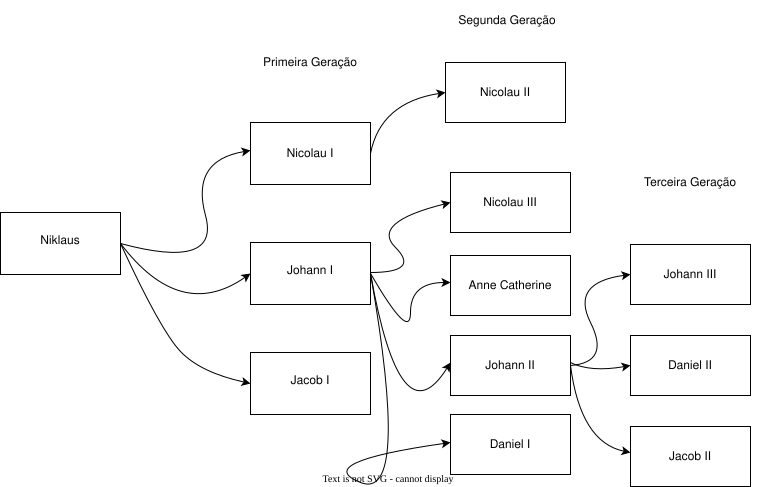

Introdução
Esse trabalho irá apresentar sobre a Familia Bernoulli Que é simplesmente a maior disnastia de matemático e físicos que já existiu na história. E não só essa informação! Essa mesma família já desvendou diversos problemas relacionados a área de cálculo diferencial, analise real, hidrodinâmica, astronomia e mecânica moderna.
Decidi fazer a apresentação desse trabalho neste site para facilitar a visualização de todo mundo na sala. Além de tornar a aula ainda mais interativa.
De onde veio essa família?
Em primeiro lugar falaremos sobre o progenitor dela Niklaus Bernoulli. Nascido na Basil - Suiça onde se desenvolveu como comerciante de especiarias. Depois de um tempo foi forçado a morar na Bélgica devido a perseguissão espanhola aos não-católicos, pois Niklaus era protestante. De lá, cuidou de seus três filhinhos: Jacob I, Johann I e Nicolau I. Apenas Nicolau I quís seguir os caminhos do pai como vendedor, os outros, foram para a Matemática.
A família teve início no nacimento de Jacob Bernoulli, lá em 1654. Ela iniciou no século XVII e desde então tem descendentes até os dias atuais.
A decendência
A dinastia possui 8 gerações diferentes, mas veremos as 3 primeiras e principais. observe a imagem a seguir:

Jacob e Johann. Os irmãos que eram rivais
Agora conheça os primeiros membros da família que eram matemáticos. Jacob Bernoulli e Johann Bernoulli nasceram, respectivamente, em 1654 e 1667 em Basil na Suiça. Como ambos não tinham as habilidades do mundo financeiro do pai, decidiram cursar Magistratura e Medicina, mas viram que a verdadeira paixão estava na matemática. Jacob se especializou na área da teoria das probabilidades e calculo das variações. Já seu irmão fazia pesquisas em calculo deferencial e integral. Embora vivessem juntos, ambos tinha uma rivalidade em comum. Um sempre desafiava o outro a resolver problemas complexos de matemática. Vendo sempre quem tinha mais contribuições na ciência. Rivalidade essa que de certa forma trouxe diversas propriedades importantes para a matemática. Algumas delas são os números de bernoulli, desigualdade de bernoulli e equação deferencial de bernoulli. Ambos estudaram na universität Basel ao mesmo tempo que lecionaram na mesma (Fato curioso: Johann foi professor de Euler e L'Hopital).
Nas gerações seguintes
Depois de solucionar varias equações diferenciais, Johann I decidiu a ter filhos. Sendo os 4: Nicolau III, Anne Catherine, Johann II e Daniel I. Depois disso Johann II prossegui com: Johann III, Daniel II e Jacob II. Sendo os decendentes mais notaveis deles Daniel I, por ter feito trabalhos relacionados ao Princípio de Bernoulli (hidrodinâmica), Johann II, pela contribuição nos estudos de propagação de som e de luz e Jacob II pela contribuição nos estudos da Elasticidade.
Legado dos Bernoulli
Os Bernoulli deixaram várias contribuições durante cada geração. Aqui vão algumas, não todas, que estão presentes em qualquer curso de matemática ou física:
- Princípio de Bernoulli (Daniel I)
- Polinômios de Bernoulli (Jacob I)
- Números de Bernoulli (Jacob I)
- Processo de Bernoulli (Jacob I)
- Equação diferêncial de Bernoulli (Jacob I)
- Triângulo de Bernoulli
- Desigualdade de bernoulli (Jacob I)
- Paradoxo de São Petesburgo (Nicolaus III)
- Distribuição de Bernoulli (Jacob I)
- Curva de braquistócrona (Johann I)
- Regra de L'Hopital (Embora tenho o nome do L'Hopital foi descoberto pelo Johann I)
Conclusão
É notavel que a família Bernoulli já troxe diversas teoremas e definições matemáticas que usamos até os dias de hoje. O que torna bastate importante a conhecer dentro do curso de história da matemática. Como dito anteriormente, a família já atavessou várias gerações e até hoje, embora os seus decendentes não cursem matemática ou física, deixam várias contribuições na europa. Um exemplo é a Cornelia Bernoulli, que está viva até hoje. Ela é uma atriz bastante conhecida na Alemanha. Além de seu pai e seu avô serem arquitetos bastante conhecidos na Basil.